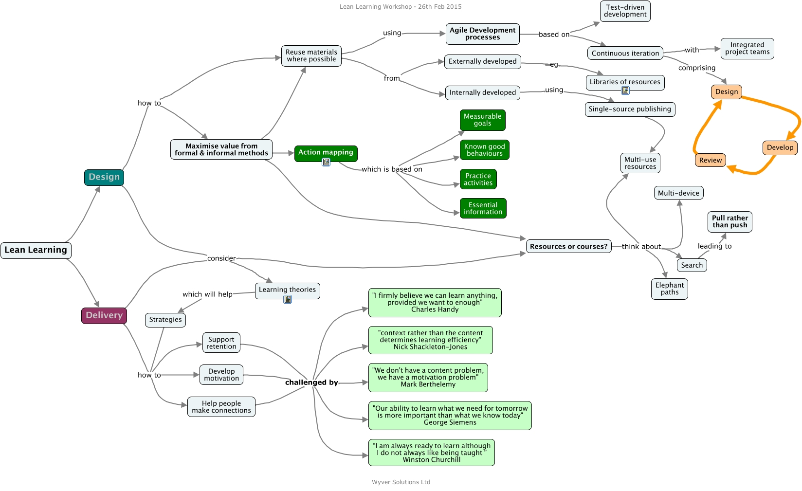

WARNING:
JavaScript is turned OFF. None of the links on this concept map will
work until it is reactivated.
If you need help turning JavaScript On, click here.
This Concept Map, created with IHMC CmapTools, has information related to: lean-learning-handout, Delivery how to Develop motivation, Review Design, Design consider Resources or courses?, Reuse materials where possible from Externally developed, Design consider Learning theories, Strategies how to Help people make connections, Single-source publishing Multi-use resources, Externally developed eg Libraries of resources, Help people make connections challenged by "Our ability to learn what we need for tomorrow is more important than what we know today" George Siemens, Delivery consider Resources or courses?, Action mapping which is based on Practice activities, Develop Review, Resources or courses? think about Elephant paths, Design Develop, Resources or courses? think about Multi-use resources, Lean Learning Delivery, Support retention challenged by “I am always ready to learn although I do not always like being taught.” Winston Churchill, Search leading to Pull rather than push, Design how to Reuse materials where possible, Develop motivation challenged by "I firmly believe we can learn anything, provided we want to enough" Charles Handy
